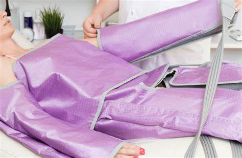
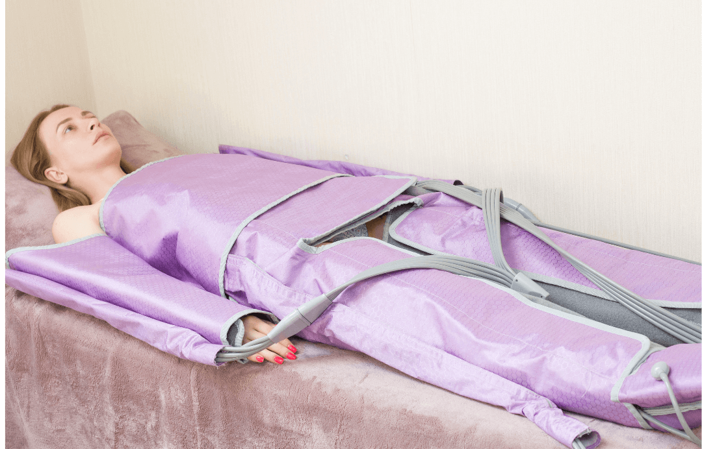
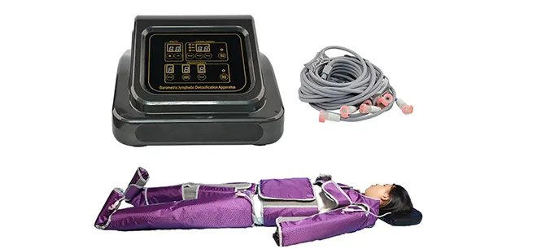
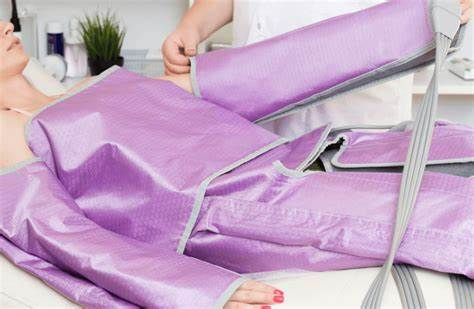
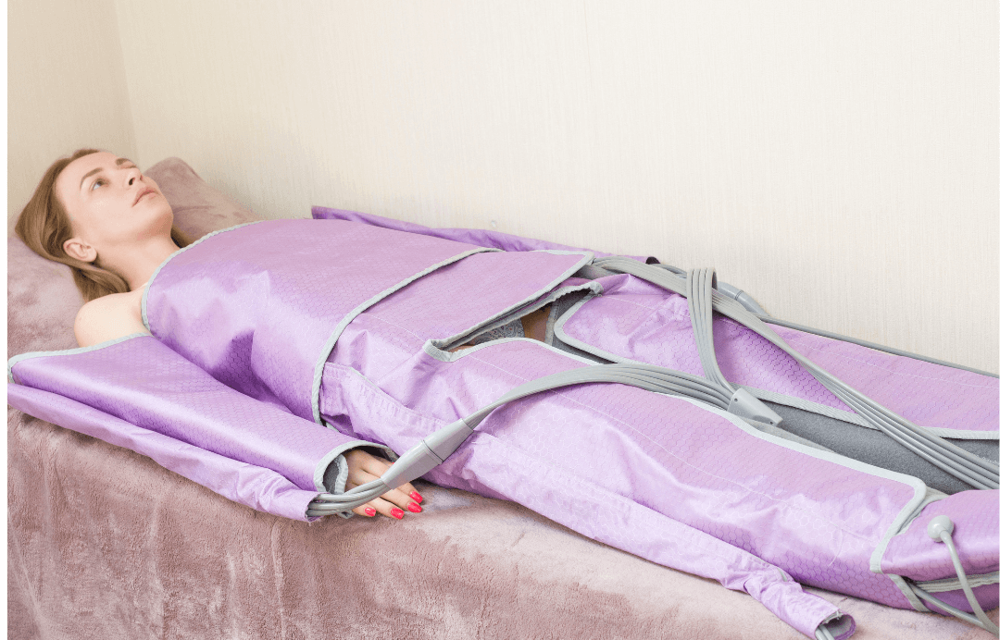
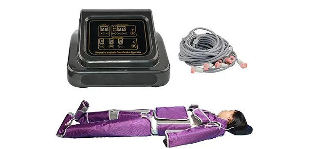
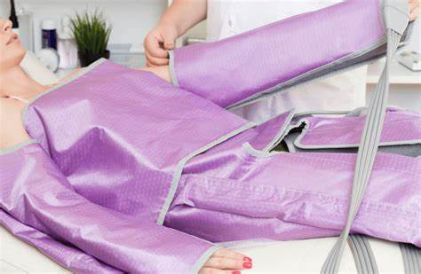
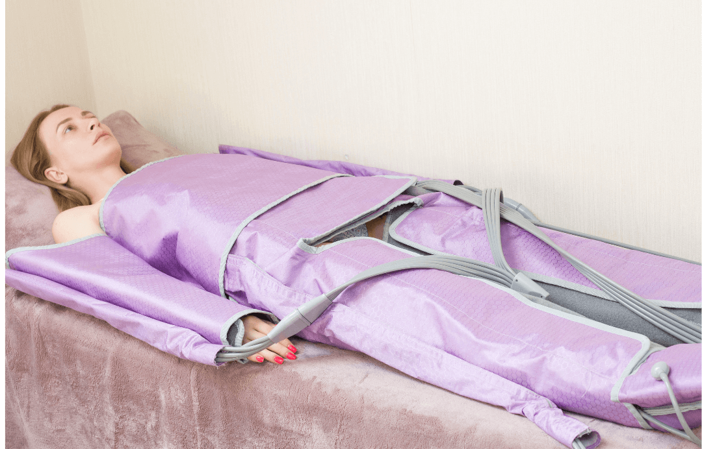
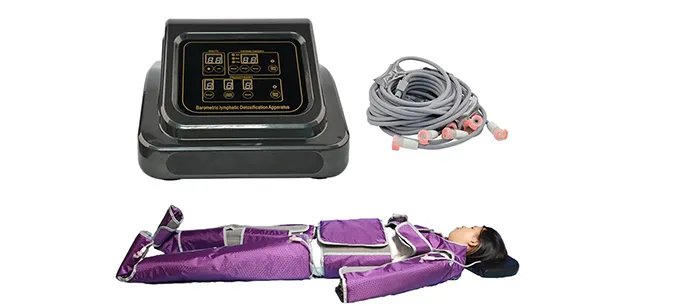
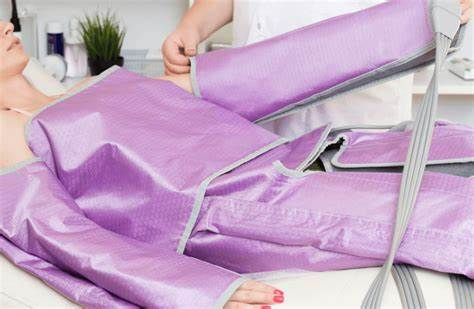
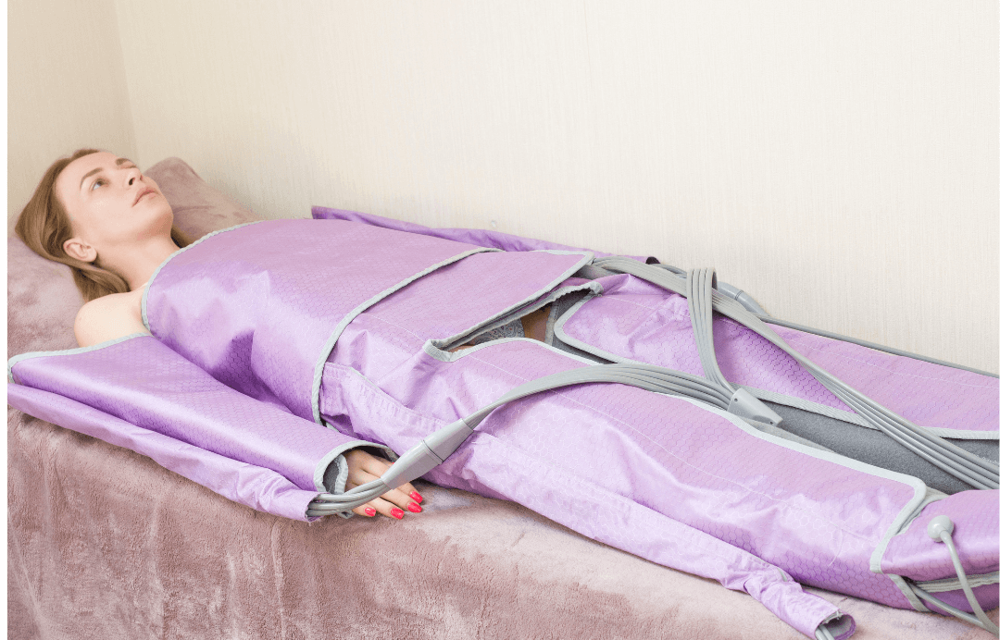
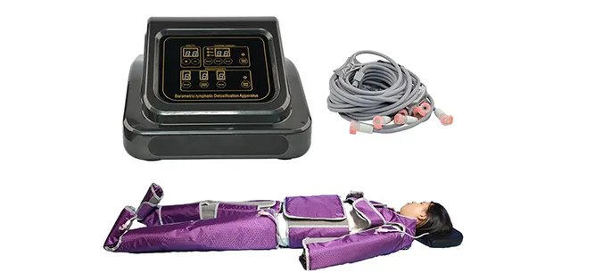
Drenajul limfatic este o tehnică terapeutică non-invazivă care stimulează sistemul limfatic, ajutând la eliminarea toxinelor și a excesului de lichide din corp. Această procedură este esențială pentru menținerea sănătății și pentru a sprijini procesele naturale de detoxifiere ale organismului.
Drenajul limfatic este potrivit pentru persoanele care se confruntă cu retenția de apă, edeme, celulită, oboseală cronică, sau care doresc să îmbunătățească funcționarea sistemului limfatic. De asemenea, este recomandat după anumite intervenții chirurgicale sau tratamente medicale pentru a accelera recuperarea.
După o ședință de drenaj limfatic, vei observa o reducere a edemelor, o piele mai fermă și o stare generală de bine. Pentru rezultate optime, se recomandă un ciclu de tratamente regulat.
Frecvența ședințelor de drenaj limfatic variază în funcție de nevoile individuale, dar în general, se recomandă 1-2 ședințe pe săptămână pentru a obține și menține rezultatele dorite.
Drenajul limfatic nu este recomandat persoanelor cu infecții acute, tromboze, tumori maligne active sau insuficiență cardiacă severă. Consultați un specialist pentru a verifica dacă acest tratament este potrivit pentru dumneavoastră.
Pentru programări, vă rugăm să ne contactați la telefon: +40 123 456 789 sau prin email: contact@bodyfusion.ro.